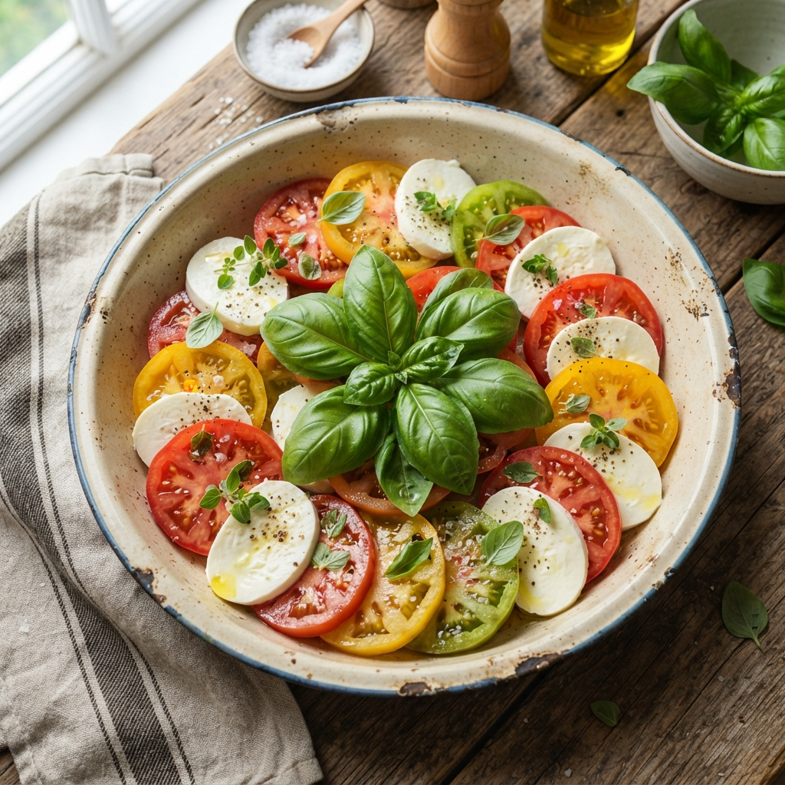

Home
Tomato Mozzarella Salad

This tomato mozzarella salad recipe is a simple, refreshing dish that's perfect for summer!
Ingredients
6 servings
- 3 large tomatoes, sliced
- 8 ounces fresh mozzarella cheese, sliced
- ¼ cup olive oil
- ¼ cup balsamic vinegar
- ¼ teaspoon salt
- ⅛ teaspoon ground black pepper
- ¼ cup minced fresh basil
Steps
- Gather all your ingredients.
- Place tomato slices, alternating with mozzarella slices, on a large serving platter.
- Combine oil, balsamic vinegar, salt, and pepper in a jar with a tight-fitting lid; shake well.
- Drizzle over tomatoes and mozzarella; sprinkle with basil.
- Enjoy!